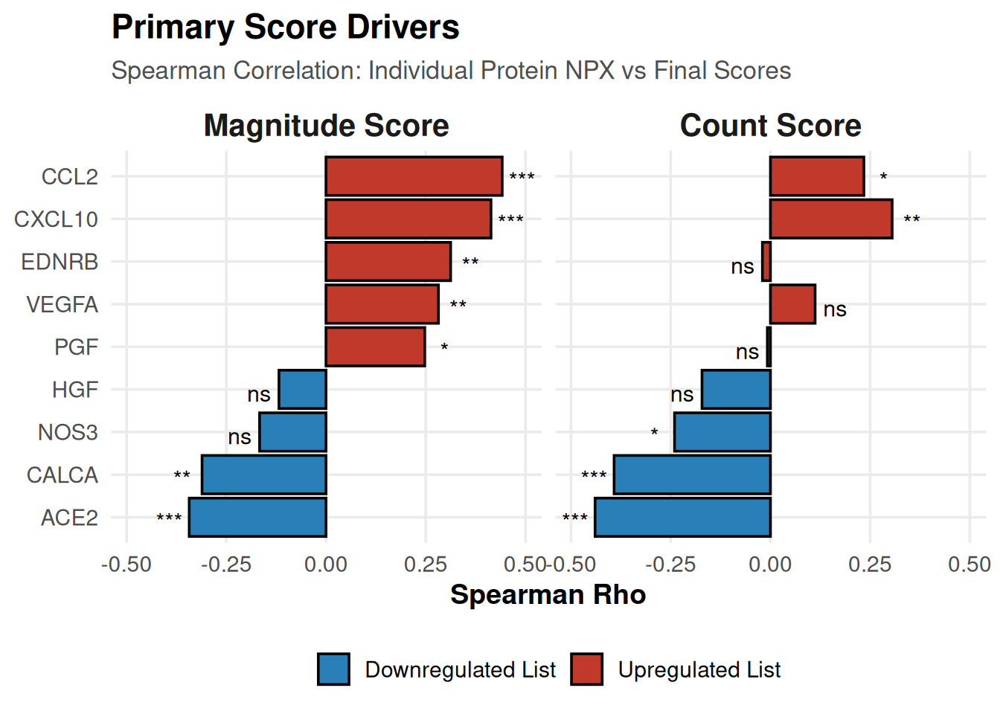
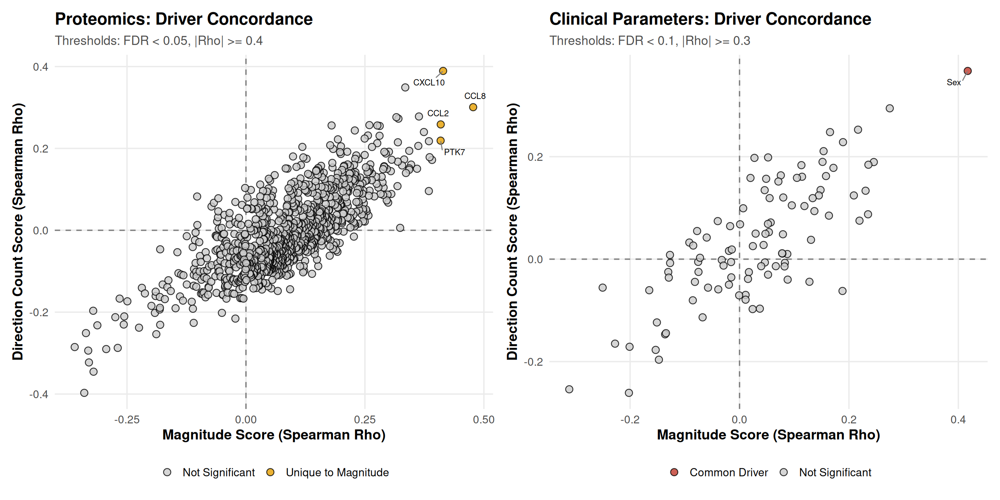
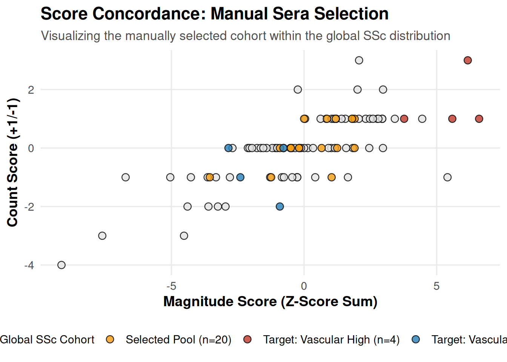
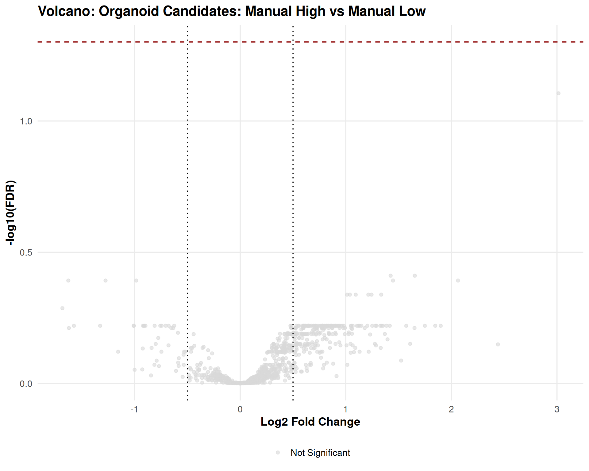
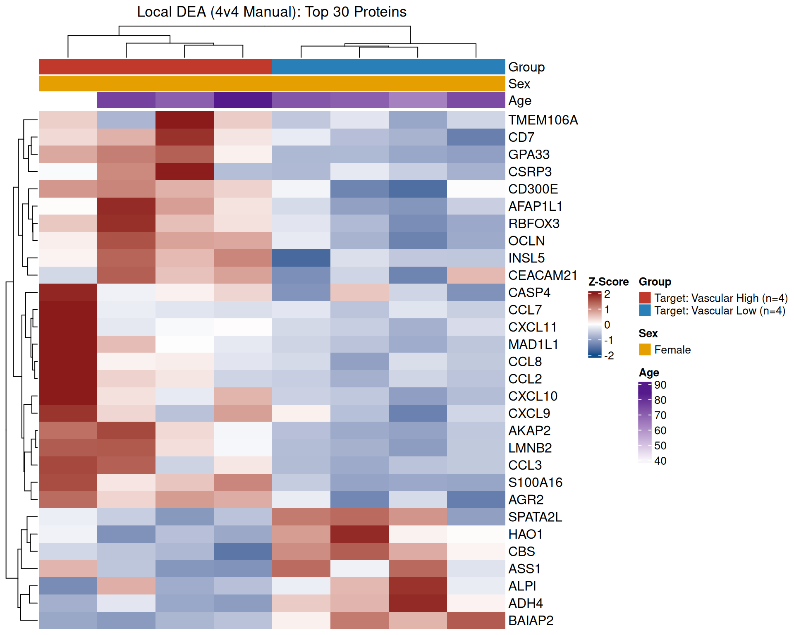
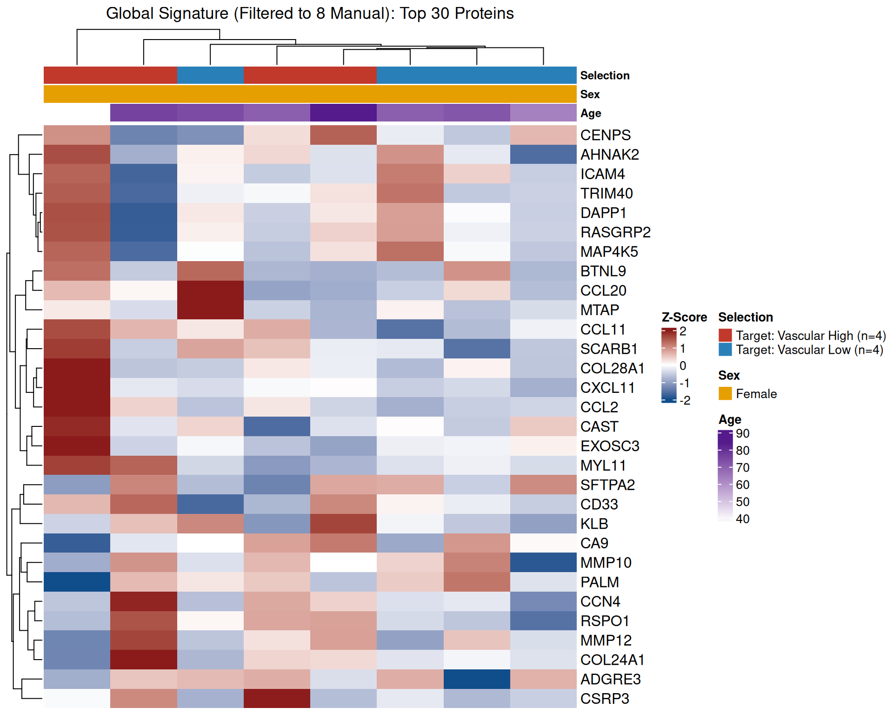
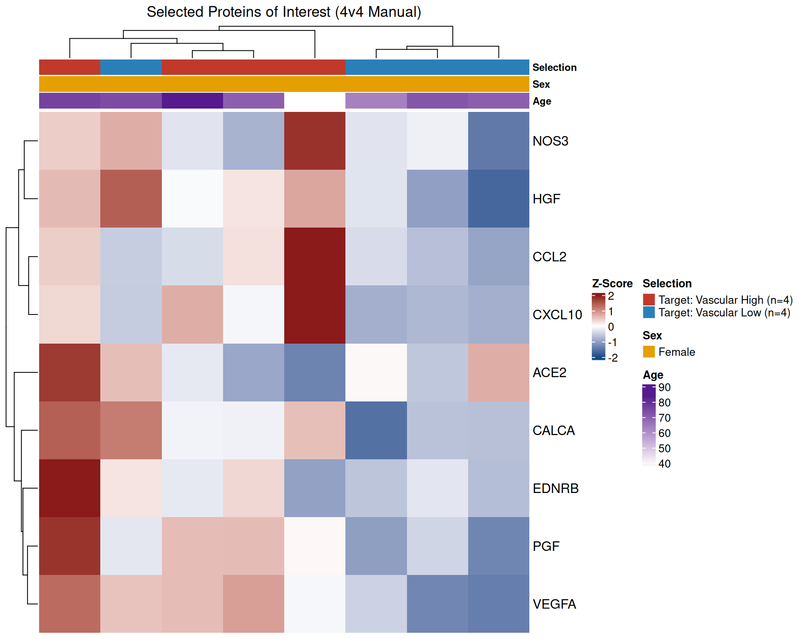

Last updated: 2026-05-04
Checks: 7 0
Knit directory: SSc-USZ/
This reproducible R Markdown analysis was created with workflowr (version 1.7.2). The Checks tab describes the reproducibility checks that were applied when the results were created. The Past versions tab lists the development history.
Great! Since the R Markdown file has been committed to the Git repository, you know the exact version of the code that produced these results.
Great job! The global environment was empty. Objects defined in the global environment can affect the analysis in your R Markdown file in unknown ways. For reproduciblity it’s best to always run the code in an empty environment.
The command set.seed(20260331) was run prior to running
the code in the R Markdown file. Setting a seed ensures that any results
that rely on randomness, e.g. subsampling or permutations, are
reproducible.
Great job! Recording the operating system, R version, and package versions is critical for reproducibility.
Nice! There were no cached chunks for this analysis, so you can be confident that you successfully produced the results during this run.
Great job! Using relative paths to the files within your workflowr project makes it easier to run your code on other machines.
Great! You are using Git for version control. Tracking code development and connecting the code version to the results is critical for reproducibility.
The results in this page were generated with repository version 6d20a2e. See the Past versions tab to see a history of the changes made to the R Markdown and HTML files.
Note that you need to be careful to ensure that all relevant files for
the analysis have been committed to Git prior to generating the results
(you can use wflow_publish or
wflow_git_commit). workflowr only checks the R Markdown
file, but you know if there are other scripts or data files that it
depends on. Below is the status of the Git repository when the results
were generated:
Ignored files:
Ignored: .Rhistory
Ignored: .Rproj.user/
Ignored: output/01_data_import_and_qc/
Ignored: output/01a_data_import_and_qc/
Ignored: output/01b_clinical_feature_engineering/
Ignored: output/02_cohort_characterization/
Ignored: output/03a_proteomics_variance/
Ignored: output/03b_proteomics_differential/
Ignored: output/03c_proteomics_clustering/
Ignored: output/randomizer/
Ignored: output/z01_sideproject_ellen/
Ignored: output/z02_sideproject_vascular_2/
Ignored: renv/library/
Ignored: renv/staging/
Untracked files:
Untracked: analysis/03d_proteomics_subgroups.Rmd
Untracked: analysis/03e_proteomics_correlations.Rmd
Untracked: code/randomizer.R
Untracked: core
Unstaged changes:
Modified: code/00_config.R
Modified: code/00_omics_engines.R
Note that any generated files, e.g. HTML, png, CSS, etc., are not included in this status report because it is ok for generated content to have uncommitted changes.
These are the previous versions of the repository in which changes were
made to the R Markdown
(analysis/z02_sideproject_vascular_2.Rmd) and HTML
(docs/z02_sideproject_vascular_2.html) files. If you’ve
configured a remote Git repository (see ?wflow_git_remote),
click on the hyperlinks in the table below to view the files as they
were in that past version.
| File | Version | Author | Date | Message |
|---|---|---|---|---|
| Rmd | 6d20a2e | alexander-gysin | 2026-05-04 | wflow_publish("analysis/z02_sideproject_vascular_2.Rmd") |
| html | 8540257 | alexander-gysin | 2026-05-04 | Build site. |
| Rmd | e7fb460 | alexander-gysin | 2026-05-04 | wflow_publish("analysis/z02_sideproject_vascular_2.Rmd") |
| html | 6393b6f | alexander-gysin | 2026-05-04 | Build site. |
| Rmd | 0c48eba | alexander-gysin | 2026-05-04 | wflow_publish("analysis/z02_sideproject_vascular_2.Rmd") |
| html | 442d5a1 | alexander-gysin | 2026-05-04 | Build site. |
| Rmd | 2e5fe32 | alexander-gysin | 2026-05-04 | wflow_publish("analysis/z02_sideproject_vascular_2.Rmd") |
Goal: To identify SSc patients with the most extreme “vascular disease” proteomic signatures to select their serum for functional in vitro organoid stimulation.
The computational pipeline currently lacks patient medication histories . If organoids exhibit divergent behavior, consider that they may be responding to circulating pharmaceutical agents in the serum rather than the endogenous vascular disease signature.
library(tidyverse)
library(patchwork)
library(here)
library(gtsummary)
library(kableExtra)
library(ComplexHeatmap)
library(circlize)
library(writexl)
library(ggrepel) # Added for non-overlapping scatterplot labels
# Knitr Config
knitr::opts_chunk$set(warning = FALSE, message = FALSE)
# Output paths
current_file <- "z02_sideproject_vascular_2"
output_dir_data <- here::here("output", current_file)
if (!dir.exists(output_dir_data)) dir.create(output_dir_data, recursive = TRUE)
# Source Engines
source(here::here("code", "00_omics_engines.R"))
# Load Pre-Cleaned Data & Global DEA Results
master_spine <- readRDS(here::here("output", "01b_clinical_feature_engineering", "curated_clinical_spine.rds"))
numeric_spine <- readRDS(here::here("output", "01b_clinical_feature_engineering", "curated_clinical_spine_numeric.rds"))
data_dict <- readRDS(here::here("output", "01b_clinical_feature_engineering", "clinical_data_dictionary.rds")) # Adjust to .csv and read_csv() if your dict is a csv!
olink_mat <- readRDS(here::here("output", "01a_data_import_and_qc", "clean_olink_matrix.rds"))
# Load Global Vascular DEA (from Script 03b)
global_vascular_dea <- readRDS(here::here("output", "03b_proteomics_differential", "full_vascular_dea_results.rds"))# 1. Protein Signatures
vascular_up_proteins <- c("VEGFA", "PGF", "CCL2", "CXCL10", "EDNRB")
vascular_down_proteins <- c("NOS3", "CALCA", "ACE2", "HGF")
# Proteins of Interest for Endothelial/Myocardial specific heatmaps
proteins_of_interest <- unique(c(vascular_up_proteins, vascular_down_proteins, "VWF", "TIE1", "TNNT2"))
# 2. Scoring Parameters
score_config <- list(
z_thresh = 1.0, # Threshold for Direction Count Score (+1 or -1)
extreme_n = 5, # Number of patients to select for Top and Bottom groups (for DEA)
shopping_n = 10 # Number of patients to export for Biobank retrieval
)
# 3. Clinical Audit & Visualization Parameters
plot_color_vars <- c("vascular_active", "Inflamm_active", "cohort_group")
audit_vars <- c("Age", "Sex", "log_Creatinine", "SSc Antibodies", "disease_duration")
# 4. Global Omics Thresholds (Required for DEA wrapper)
omics_config <- list(gsea_p_cutoff = 0.20, gsea_min_size = 3)
heatmap_config <- list(top_n = 30, split_by_group = TRUE, row_font_size = 8)
# 5. NEW: Correlation Discovery Thresholds
cor_config <- list(
max_table_rows = 30, # How many top hits to display in the HTML tables
proteomics = list(
fdr_thresh = 0.05,
rho_thresh = 0.4
),
clinical = list(
fdr_thresh = 0.10, # Slightly looser FDR for clinical traits due to lower N and higher variance
rho_thresh = 0.3
)
)# Clean lists to only include available proteins
valid_up <- intersect(vascular_up_proteins, rownames(olink_mat))
valid_down <- intersect(vascular_down_proteins, rownames(olink_mat))
# Restrict to SSc patients only
ssc_patients <- master_spine %>% filter(cohort_group %in% c(GRP_ACTIVE, GRP_NON_ACTIVE)) %>% pull(Subject_ID)
valid_ssc_ids <- intersect(ssc_patients, colnames(olink_mat))
# 1. Z-Score Scaling (Scaled across SSc patients only)
z_mat <- t(scale(t(olink_mat[, valid_ssc_ids])))
# 2. Magnitude Score Calculation (Aligned: Up - Down)
mag_up <- colSums(z_mat[valid_up, , drop=FALSE], na.rm=TRUE)
mag_down <- colSums(z_mat[valid_down, , drop=FALSE], na.rm=TRUE)
mag_score <- mag_up - mag_down
# 3. Direction Count Score (+1/-1 logic)
# UP list logic
up_plus <- colSums(z_mat[valid_up, , drop=FALSE] > score_config$z_thresh, na.rm=TRUE)
up_minus <- colSums(z_mat[valid_up, , drop=FALSE] < -score_config$z_thresh, na.rm=TRUE)
# DOWN list logic (Inverted biologically)
down_plus <- colSums(z_mat[valid_down, , drop=FALSE] < -score_config$z_thresh, na.rm=TRUE) # Low is bad
down_minus <- colSums(z_mat[valid_down, , drop=FALSE] > score_config$z_thresh, na.rm=TRUE) # High is good
count_score <- (up_plus - up_minus) + (down_plus - down_minus)
# 4. Master Score DataFrame
score_df <- data.frame(
Subject_ID = valid_ssc_ids,
Magnitude_Score = mag_score,
Count_Score = count_score
) %>%
mutate(
# Concordance Ranking (Lower rank = more extreme disease)
Rank_Mag = rank(-Magnitude_Score),
Rank_Count = rank(-Count_Score),
Concordance_Rank = Rank_Mag + Rank_Count
) %>%
arrange(Concordance_Rank)
# Merge back with clinical data for plotting
plot_spine <- master_spine %>% inner_join(score_df, by = "Subject_ID")for (c_var in plot_color_vars) {
if (!(c_var %in% colnames(plot_spine))) next
cat(sprintf("\n\n### Colored by: %s\n\n", c_var))
p_mag <- ggplot(plot_spine %>% filter(!is.na(!!sym(c_var))), aes(x = Magnitude_Score, fill = !!sym(c_var))) +
geom_density(alpha = 0.5) +
theme_project_base() +
labs(title = "Magnitude Score", x = "Magnitude (Sum of aligned Z-scores)") +
theme(plot.title = element_text(size = 11, face = "italic"))
p_cnt <- ggplot(plot_spine %>% filter(!is.na(!!sym(c_var))), aes(x = Count_Score, fill = !!sym(c_var))) +
geom_histogram(alpha = 1, position = "stack", bins = 15, color = "black") +
theme_project_base() +
labs(title = "Direction Count Score", x = "Count Score") +
theme(plot.title = element_text(size = 11, face = "italic"))
# Use patchwork's plot_annotation to create a master title for the whole figure
master_plot <- (p_mag | p_cnt) +
plot_annotation(
title = sprintf("Vascular Score Distributions (Colored by: %s)", c_var),
theme = theme(plot.title = element_text(size = 15, face = "bold"))
)
print(master_plot)
cat("\n\n")
}all_scoring_prots <- unique(c(valid_up, valid_down))
# Helper function to extract Rho, P-value, and assign significance stars
get_cor_stats <- function(p, score_col) {
res <- cor.test(olink_mat[p, plot_spine$Subject_ID], plot_spine[[score_col]], method = "spearman", exact = FALSE)
stars <- case_when(
res$p.value < 0.001 ~ "***",
res$p.value < 0.01 ~ "**",
res$p.value < 0.05 ~ "*",
TRUE ~ "ns"
)
return(data.frame(Rho = res$estimate, P_Val = res$p.value, Stars = stars))
}
# Calculate for both scores
mag_res <- lapply(all_scoring_prots, function(p) get_cor_stats(p, "Magnitude_Score")) %>% bind_rows() %>% mutate(Protein = all_scoring_prots, Score_Type = "Magnitude Score")
cnt_res <- lapply(all_scoring_prots, function(p) get_cor_stats(p, "Count_Score")) %>% bind_rows() %>% mutate(Protein = all_scoring_prots, Score_Type = "Count Score")
driver_df <- bind_rows(mag_res, cnt_res) %>%
mutate(Direction = ifelse(Protein %in% valid_up, "Upregulated List", "Downregulated List"))
order_prots <- driver_df %>% filter(Score_Type == "Magnitude Score") %>% arrange(Rho) %>% pull(Protein)
driver_df$Protein <- factor(driver_df$Protein, levels = order_prots)
driver_df$Score_Type <- factor(driver_df$Score_Type, levels = c("Magnitude Score", "Count Score"))
ggplot(driver_df, aes(x = Protein, y = Rho, fill = Direction)) +
geom_bar(stat = "identity", color = "black") +
geom_text(aes(label = Stars, y = Rho + sign(Rho)*0.05), size = 4, vjust = 0.75) +
coord_flip() +
facet_wrap(~ Score_Type) +
scale_fill_manual(values = c("Upregulated List" = "#c0392b", "Downregulated List" = "#2980b9")) +
theme_project_base() +
labs(title = "Primary Score Drivers", subtitle = "Spearman Correlation: Individual Protein NPX vs Final Scores", x = NULL, y = "Spearman Rho")
| Version | Author | Date |
|---|---|---|
| 442d5a1 | alexander-gysin | 2026-05-04 |
# 1. Prepare Data Matrices -----------------------------------------------------
valid_ssc_ids <- plot_spine$Subject_ID
# Prepare the Score DataFrame with the Inverted Rank
score_df_sub <- plot_spine %>%
select(Subject_ID, Magnitude_Score, Count_Score, Concordance_Rank) %>%
mutate(Inverted_Rank = -1 * Concordance_Rank)
# Prepare Clinical Matrix (Filtered by Dictionary 'PASS')
pass_vars <- data_dict %>% filter(QC_Flag == "PASS") %>% pull(Variable)
clin_vars <- intersect(colnames(numeric_spine), pass_vars)
clin_vars <- setdiff(clin_vars, "Subject_ID")
clin_df <- numeric_spine %>% filter(Subject_ID %in% valid_ssc_ids) %>% select(Subject_ID, all_of(clin_vars))
# FIX: Safely move ID to row names, then purge any accidental text columns before transposing
clin_mat <- t(clin_df %>%
column_to_rownames("Subject_ID") %>%
select(where(is.numeric)))
# Prepare Proteomics Matrix
prot_mat <- olink_mat[, valid_ssc_ids]
# 2. Correlation Engine --------------------------------------------------------
run_mass_cor <- function(data_mat, score_vec) {
res <- apply(data_mat, 1, function(x) {
if(sum(!is.na(x)) < 10) return(c(Rho=NA, P_Val=NA)) # Skip features with < 10 valid data points
ct <- cor.test(x, score_vec, method="spearman", exact=FALSE)
# unname() strips the hidden 'rho' label so dplyr can find the columns
c(Rho=unname(ct$estimate), P_Val=unname(ct$p.value))
})
df <- as.data.frame(t(res)) %>%
rownames_to_column("Feature") %>%
filter(!is.na(Rho)) %>%
mutate(FDR = p.adjust(P_Val, method="BH")) %>%
arrange(desc(abs(Rho)))
return(df)
}
# 3. Execution & HTML Construction Loop ----------------------------------------
# We store results in a master list for the next chunk
cor_results <- list(proteomics = list(), clinical = list())
score_targets <- c("Magnitude_Score", "Count_Score", "Inverted_Rank")
modalities <- list(proteomics = prot_mat, clinical = clin_mat)
# HTML string accumulator to prevent fragmenting the output box (Knitting only)
html_out <- ""
for (mod_name in names(modalities)) {
if (!interactive()) {
html_out <- paste0(html_out, sprintf("\n\n### %s {.tabset}\n\n", tools::toTitleCase(mod_name)))
}
mod_conf <- cor_config[[mod_name]]
for (score_name in score_targets) {
clean_score_name <- gsub("_", " ", score_name)
if (!interactive()) {
html_out <- paste0(html_out, sprintf("\n\n#### %s\n\n", clean_score_name))
}
# Calculate
score_vec <- setNames(score_df_sub[[score_name]], score_df_sub$Subject_ID)
res_df <- run_mass_cor(modalities[[mod_name]], score_vec)
cor_results[[mod_name]][[score_name]] <- res_df
# Export full dataset
export_name <- sprintf("Correlations_%s_vs_%s.csv", tools::toTitleCase(mod_name), score_name)
write_csv(res_df, file.path(output_dir_data, export_name))
# Filter for Significant Top Hits for Display
sig_df <- res_df %>% filter(FDR < mod_conf$fdr_thresh & abs(Rho) >= mod_conf$rho_thresh)
caption_text <- sprintf("<br><i>Showing top %d significant hits (FDR < %s, |Rho| >= %s). Full list exported to output folder.</i>\n\n",
min(nrow(sig_df), cor_config$max_table_rows), mod_conf$fdr_thresh, mod_conf$rho_thresh)
if (nrow(sig_df) > 0) {
tbl_html <- sig_df %>%
head(cor_config$max_table_rows) %>%
kbl(format = "html", digits = 3, align = "c") %>%
kable_styling(bootstrap_options = c("striped", "hover", "condensed"), full_width = TRUE) %>% # FIX: Set full_width to TRUE
scroll_box(height = "400px")
# The Dual-Path Rendering Engine
if (interactive()) {
cat(sprintf("\n=== %s vs %s ===\n", tools::toTitleCase(mod_name), clean_score_name))
print(tbl_html) # Forces RStudio Viewer to render
cat(caption_text, "\n")
} else {
html_out <- paste0(html_out, tbl_html, "\n\n", caption_text)
}
} else {
empty_msg <- "> No features passed the significance thresholds.\n\n"
if (interactive()) {
cat(sprintf("\n=== %s vs %s ===\n", tools::toTitleCase(mod_name), clean_score_name))
cat(empty_msg)
} else {
html_out <- paste0(html_out, empty_msg)
}
}
}
}
# Print the entire compiled HTML structure at once (Knitting only)
if (!interactive()) {
cat(html_out)
}| Feature | Rho | P_Val | FDR |
|---|---|---|---|
| CCL8 | 0.484 | 0 | 0.001 |
| CCL2 | 0.447 | 0 | 0.003 |
| PTK7 | 0.424 | 0 | 0.006 |
| CXCL10 | 0.418 | 0 | 0.006 |
| CXCL8 | 0.404 | 0 | 0.009 |
Showing top 5 significant hits (FDR < 0.05, |Rho| >=
0.4). Full list exported to output folder.
| Feature | Rho | P_Val | FDR |
|---|---|---|---|
| ACE2 | -0.431 | 0 | 0.012 |
Showing top 1 significant hits (FDR < 0.05, |Rho| >=
0.4). Full list exported to output folder.
| Feature | Rho | P_Val | FDR |
|---|---|---|---|
| ACE2 | -0.410 | 0 | 0.019 |
| CSF3R | -0.401 | 0 | 0.019 |
Showing top 2 significant hits (FDR < 0.05, |Rho| >=
0.4). Full list exported to output folder.
| Feature | Rho | P_Val | FDR |
|---|---|---|---|
| Sex | 0.397 | 0.000 | 0.005 |
| Hemoglobin (g/dl) | -0.312 | 0.002 | 0.080 |
Showing top 2 significant hits (FDR < 0.1, |Rho| >=
0.3). Full list exported to output folder.
| Feature | Rho | P_Val | FDR |
|---|---|---|---|
| Sex | 0.477 | 0 | 0 |
Showing top 1 significant hits (FDR < 0.1, |Rho| >=
0.3). Full list exported to output folder.
| Feature | Rho | P_Val | FDR |
|---|---|---|---|
| Sex | 0.455 | 0 | 0 |
Showing top 1 significant hits (FDR < 0.1, |Rho| >=
0.3). Full list exported to output folder.
# 1. Quadrant Plotting Engine --------------------------------------------------
plot_quadrant <- function(mag_df, count_df, conf, title_prefix) {
# Join dataframes safely
df <- mag_df %>%
inner_join(count_df, by = "Feature", suffix = c("_Mag", "_Count")) %>%
mutate(
Sig_Mag = FDR_Mag < conf$fdr_thresh & abs(Rho_Mag) >= conf$rho_thresh,
Sig_Count = FDR_Count < conf$fdr_thresh & abs(Rho_Count) >= conf$rho_thresh,
Category = case_when(
Sig_Mag & Sig_Count ~ "Common Driver",
Sig_Mag ~ "Unique to Magnitude",
Sig_Count ~ "Unique to Count",
TRUE ~ "Not Significant"
),
Label = ifelse(Category != "Not Significant", Feature, "")
)
cat_colors <- setNames(
c("#c0392b", "#E69F00", "#0072B2", "grey80"),
c("Common Driver", "Unique to Magnitude", "Unique to Count", "Not Significant")
)
p <- ggplot(df, aes(x = Rho_Mag, y = Rho_Count, fill = Category, label = Label)) +
geom_hline(yintercept = 0, linetype = "dashed", color = "grey50") +
geom_vline(xintercept = 0, linetype = "dashed", color = "grey50") +
geom_point(shape = 21, size = 3, alpha = 0.8, color = "black") +
geom_text_repel(size = 3, max.overlaps = 15, box.padding = 0.5, segment.color = "grey50") +
scale_fill_manual(values = cat_colors) +
theme_project_base() +
labs(
title = sprintf("%s: Driver Concordance", title_prefix),
subtitle = sprintf("Thresholds: FDR < %s, |Rho| >= %s", conf$fdr_thresh, conf$rho_thresh),
x = "Magnitude Score (Spearman Rho)",
y = "Direction Count Score (Spearman Rho)"
)
return(p)
}
# 2. Generate and Save Plots ---------------------------------------------------
p_prot <- plot_quadrant(
mag_df = cor_results$proteomics$Magnitude_Score,
count_df = cor_results$proteomics$Count_Score,
conf = cor_config$proteomics,
title_prefix = "Proteomics"
)
p_clin <- plot_quadrant(
mag_df = cor_results$clinical$Magnitude_Score,
count_df = cor_results$clinical$Count_Score,
conf = cor_config$clinical,
title_prefix = "Clinical Parameters"
)
# Print side-by-side
print(p_prot | p_clin)
| Version | Author | Date |
|---|---|---|
| 442d5a1 | alexander-gysin | 2026-05-04 |
# Save to disk
ggsave(file.path(output_dir_data, "Quadrant_Proteomics.png"), p_prot, width = 8, height = 7, bg = "white")
ggsave(file.path(output_dir_data, "Quadrant_Clinical.png"), p_clin, width = 8, height = 7, bg = "white")
# Memory Cleanup (Delete variables no longer needed outside these chunks)
rm(clin_mat, prot_mat, score_df_sub, clin_df, cor_results, html_out)# Define the Extreme Groups based on Concordance Rank
top_patients <- plot_spine %>% slice_min(Concordance_Rank, n = score_config$extreme_n) %>% pull(Subject_ID)
bot_patients <- plot_spine %>% slice_max(Concordance_Rank, n = score_config$extreme_n) %>% pull(Subject_ID)
lbl_unselected <- "Unselected"
lbl_top <- sprintf("Top %d (Vascular High)", score_config$extreme_n)
lbl_bot <- sprintf("Bottom %d (Vascular Low)", score_config$extreme_n)
plot_spine <- plot_spine %>%
mutate(Selection = case_when(
Subject_ID %in% top_patients ~ lbl_top,
Subject_ID %in% bot_patients ~ lbl_bot,
TRUE ~ lbl_unselected
))
selection_colors <- setNames(c("grey80", "#c0392b", "#2980b9"), c(lbl_unselected, lbl_top, lbl_bot))
p_scatter <- ggplot(plot_spine, aes(x = Magnitude_Score, y = Count_Score, fill = Selection)) +
geom_point(shape = 21, size = 3, alpha = 0.8, color = "black") +
scale_fill_manual(values = selection_colors) +
theme_project_base() +
labs(title = "Score Concordance & Sera Selection",
subtitle = sprintf("Selecting top and bottom %d patients based on combined ranking", score_config$extreme_n),
x = "Magnitude Score (Z-Score Sum)", y = "Count Score (+1/-1)")
print(p_scatter)
| Version | Author | Date |
|---|---|---|
| 442d5a1 | alexander-gysin | 2026-05-04 |
ggsave(file.path(output_dir_data, "Patient_Selection_Concordance.png"), p_scatter, width=8, height=6, bg="white")
tbl_data <- plot_spine %>%
filter(Selection != lbl_unselected) %>%
select(Subject_ID, Selection, Magnitude_Score, Count_Score, Concordance_Rank) %>%
arrange(Concordance_Rank)
# Print cleanly for both inline RStudio and Knitted HTML
tbl_data %>%
kbl(format = "html", digits = 2, align = "c") %>%
kable_styling(bootstrap_options = c("striped", "hover", "condensed"), full_width = FALSE, position = "left") %>%
row_spec(0, bold = TRUE)| Subject_ID | Selection | Magnitude_Score | Count_Score | Concordance_Rank |
|---|---|---|---|---|
| Act_37 | Top 5 (Vascular High) | 6.25 | 4 | 3.0 |
| Nonact_10 | Top 5 (Vascular High) | 3.35 | 2 | 12.5 |
| Nonact_29 | Top 5 (Vascular High) | 2.83 | 2 | 16.5 |
| Act_46 | Top 5 (Vascular High) | 6.62 | 1 | 21.0 |
| Act_8 | Top 5 (Vascular High) | 5.58 | 1 | 23.0 |
| Act_28 | Bottom 5 (Vascular Low) | -4.86 | -2 | 181.0 |
| Act_4 | Bottom 5 (Vascular Low) | -6.88 | -2 | 182.0 |
| Nonact_25 | Bottom 5 (Vascular Low) | -4.17 | -3 | 184.0 |
| Nonact_11 | Bottom 5 (Vascular Low) | -7.38 | -4 | 190.5 |
| Act_14 | Bottom 5 (Vascular Low) | -9.41 | -4 | 191.5 |
audit_cols <- intersect(audit_vars, colnames(plot_spine))
audit_df <- plot_spine %>%
filter(Selection != "Unselected") %>%
select(Selection, all_of(audit_cols))
continuous_force_vars <- intersect(c("Age", "log_Creatinine", "disease_duration"), colnames(audit_df))
suppressMessages(suppressWarnings({
tbl_audit <- audit_df %>%
tbl_summary(
by = Selection,
missing = "no",
type = list(any_of(continuous_force_vars) ~ "continuous")
) %>%
add_p() %>%
bold_labels() %>%
modify_header(label = "**Clinical Confounder**")
}))
tbl_audit %>% as_kable_extra(format = "html") %>%
kable_styling(bootstrap_options = c("striped", "hover", "condensed"), full_width = FALSE, position = "left")| Clinical Confounder |
Bottom 5 (Vascular Low) N = 5 |
Top 5 (Vascular High) N = 5 |
p-value |
|---|---|---|---|
| Age | 47 (44, 66) | 70 (38, 70) | 0.7 |
| Sex | 0.048 | ||
| Male | 4 (80%) | 0 (0%) | |
| Female | 1 (20%) | 5 (100%) | |
| log_Creatinine | 1.95 (1.94, 1.96) | 1.85 (1.80, 1.86) | 0.2 |
| SSc Antibodies | 3 (60%) | 5 (100%) | 0.4 |
| 1 Median (Q1, Q3); n (%) | |||
| 2 Wilcoxon rank sum test; Fisher’s exact test |
# 1. Setup Custom DEA Config for the Wrapper
extreme_dea_conf <- list(
title = sprintf("Organoid Candidates: Top %d vs Bottom %d", score_config$extreme_n, score_config$extreme_n),
group_col = "Selection",
target_groups = c(sprintf("Top %d (Vascular High)", score_config$extreme_n)),
ref_groups = c(sprintf("Bottom %d (Vascular Low)", score_config$extreme_n)),
is_continuous = FALSE,
covariates = c(),
dea_p_cutoff = 0.05,
dea_fc_cutoff = 0.5,
custom_color_map = selection_colors # <--- Pass custom colors safely
)
# 2. Run DEA Engine
dea_res <- wrap_dea_pipeline(
omics_mat = olink_mat,
clin_df = plot_spine,
dea_conf = extreme_dea_conf,
dea_id = "extreme_vascular",
base_output_dir = output_dir_data,
go_db = NULL,
omics_config = omics_config,
heatmap_config = heatmap_config,
project_colors_func = get_project_colors
)
clin_extreme <- plot_spine %>% filter(Selection != "Unselected")
# HEATMAP 1: Local DEA (Extreme Phenotype)
cat("## Local DEA Heatmap\n\n")if (dea_res$status == "success") {
print(dea_res$plots$volcano)
cat("\n\n<br>\n\n")
hm_local <- run_heatmap_engine(
mat = olink_mat,
clin = clin_extreme,
dea_res = dea_res$data$dea,
title = "Local DEA (5v5)",
n_top = 30,
split_by_group = FALSE, # Unsupervised clustering
split_col = "Selection",
custom_color_map = selection_colors
)
draw(hm_local)
cat("\n\n")
} else {
cat(sprintf("> <span style='color:red;'>**DEA Failed:** %s</span>\n\n", dea_res$error_msg))
}
| Version | Author | Date |
|---|---|---|
| 442d5a1 | alexander-gysin | 2026-05-04 |

| Version | Author | Date |
|---|---|---|
| 442d5a1 | alexander-gysin | 2026-05-04 |
# HEATMAP 2: Global DEA Signature
cat("## Global DEA Heatmap\n\n")if (exists("global_vascular_dea") && !is.null(global_vascular_dea)) {
hm_global <- run_heatmap_engine(
mat = olink_mat,
clin = clin_extreme,
dea_res = global_vascular_dea,
title = "Global DEA (full cohort)",
n_top = 30,
split_by_group = FALSE,
split_col = "Selection",
custom_color_map = selection_colors
)
draw(hm_global)
cat("\n\n")
} else {
cat("> Global DEA results not found. Skipping Global Heatmap.\n\n")
}
| Version | Author | Date |
|---|---|---|
| 442d5a1 | alexander-gysin | 2026-05-04 |
# HEATMAP 3: Custom Proteins of Interest
cat("## Custom POI Heatmap\n\n")valid_poi <- intersect(proteins_of_interest, rownames(olink_mat))
if (length(valid_poi) > 1 && dea_res$status == "success") {
poi_limma_df <- dea_res$data$dea %>% filter(Feature %in% valid_poi)
poi_heatmap <- run_heatmap_engine(
mat = olink_mat,
clin = clin_extreme,
dea_res = poi_limma_df,
title = "Selected Proteins of Interest (5v5 DEA)",
n_top = length(valid_poi),
split_by_group = FALSE,
split_col = "Selection",
show_top_n_title = FALSE, # Suppress the "Top 9" text
custom_color_map = selection_colors
)
draw(poi_heatmap)
cat("\n\n")
} else {
cat("> Insufficient Valid POIs to generate targeted heatmap.\n\n")
}
# Select only the needed columns FIRST to prevent duplicate column warnings
shopping_top <- plot_spine %>%
slice_min(Concordance_Rank, n = score_config$shopping_n) %>%
mutate(Target_Group = "High Vascular Serum") %>%
select(Target_Group, Subject_ID, Concordance_Rank, Magnitude_Score, Count_Score)
shopping_bot <- plot_spine %>%
slice_max(Concordance_Rank, n = score_config$shopping_n) %>%
mutate(Target_Group = "Low Vascular Serum") %>%
select(Target_Group, Subject_ID, Concordance_Rank, Magnitude_Score, Count_Score)
# Bind clean rows
shopping_list <- bind_rows(shopping_top, shopping_bot) %>%
arrange(Target_Group, Concordance_Rank)
export_path <- file.path(output_dir_data, "Biobank_Organoid_Shopping_List.xlsx")
write_xlsx(shopping_list, export_path)
# Print the Table to HTML
shopping_list %>%
kbl(format = "html", digits = 2, align = "c") %>%
kable_styling(bootstrap_options = c("striped", "hover", "condensed"), full_width = TRUE) %>%
row_spec(0, bold = TRUE)| Target_Group | Subject_ID | Concordance_Rank | Magnitude_Score | Count_Score |
|---|---|---|---|---|
| High Vascular Serum | Act_37 | 3.0 | 6.25 | 4 |
| High Vascular Serum | Nonact_10 | 12.5 | 3.35 | 2 |
| High Vascular Serum | Nonact_29 | 16.5 | 2.83 | 2 |
| High Vascular Serum | Act_46 | 21.0 | 6.62 | 1 |
| High Vascular Serum | Act_8 | 23.0 | 5.58 | 1 |
| High Vascular Serum | Nonact_12 | 25.0 | 1.92 | 3 |
| High Vascular Serum | Act_6 | 26.0 | 3.71 | 1 |
| High Vascular Serum | Nonact_42 | 27.5 | 1.96 | 2 |
| High Vascular Serum | Nonact_47 | 29.0 | 2.88 | 1 |
| High Vascular Serum | Nonact_40 | 30.0 | 2.83 | 1 |
| Low Vascular Serum | Nonact_5 | 170.0 | -2.71 | -2 |
| Low Vascular Serum | Act_29 | 173.0 | -3.37 | -2 |
| Low Vascular Serum | Act_31 | 175.0 | -3.51 | -2 |
| Low Vascular Serum | Nonact_14 | 176.0 | -3.74 | -2 |
| Low Vascular Serum | Nonact_13 | 179.0 | -4.47 | -2 |
| Low Vascular Serum | Act_28 | 181.0 | -4.86 | -2 |
| Low Vascular Serum | Act_4 | 182.0 | -6.88 | -2 |
| Low Vascular Serum | Nonact_25 | 184.0 | -4.17 | -3 |
| Low Vascular Serum | Nonact_11 | 190.5 | -7.38 | -4 |
| Low Vascular Serum | Act_14 | 191.5 | -9.41 | -4 |
cat("Script z02 Complete! \n")Script z02 Complete!
sessionInfo()R version 4.5.2 (2025-10-31)
Platform: x86_64-pc-linux-gnu
Running under: Ubuntu 24.04.3 LTS
Matrix products: default
BLAS: /usr/lib/x86_64-linux-gnu/openblas-pthread/libblas.so.3
LAPACK: /usr/lib/x86_64-linux-gnu/openblas-pthread/libopenblasp-r0.3.26.so; LAPACK version 3.12.0
locale:
[1] LC_CTYPE=en_US.UTF-8 LC_NUMERIC=C
[3] LC_TIME=en_US.UTF-8 LC_COLLATE=en_US.UTF-8
[5] LC_MONETARY=en_US.UTF-8 LC_MESSAGES=en_US.UTF-8
[7] LC_PAPER=en_US.UTF-8 LC_NAME=C
[9] LC_ADDRESS=C LC_TELEPHONE=C
[11] LC_MEASUREMENT=en_US.UTF-8 LC_IDENTIFICATION=C
time zone: Etc/UTC
tzcode source: system (glibc)
attached base packages:
[1] grid stats graphics grDevices datasets utils methods
[8] base
other attached packages:
[1] car_3.1-5 carData_3.0-6 future.apply_1.20.2
[4] future_1.70.0 variancePartition_1.40.2 BiocParallel_1.44.0
[7] ggVennDiagram_1.5.7 glmnet_4.1-10 Matrix_1.7-5
[10] UpSetR_1.4.0 ggridges_0.5.7 pheatmap_1.0.13
[13] enrichplot_1.30.5 clusterProfiler_4.18.4 factoextra_2.0.0
[16] FactoMineR_2.13 limma_3.66.0 ggrepel_0.9.8
[19] writexl_1.5.4 circlize_0.4.18 ComplexHeatmap_2.26.1
[22] kableExtra_1.4.0 gtsummary_2.5.0 here_1.0.2
[25] patchwork_1.3.2 lubridate_1.9.5 forcats_1.0.1
[28] stringr_1.6.0 dplyr_1.2.1 purrr_1.2.1
[31] readr_2.2.0 tidyr_1.3.2 tibble_3.3.1
[34] tidyverse_2.0.0 ggplot2_4.0.2 workflowr_1.7.2
loaded via a namespace (and not attached):
[1] fs_2.0.1 matrixStats_1.5.0 bitops_1.0-9
[4] httr_1.4.8 RColorBrewer_1.1-3 doParallel_1.0.17
[7] numDeriv_2016.8-1.1 tools_4.5.2 backports_1.5.1
[10] R6_2.6.1 DT_0.34.0 lazyeval_0.2.2
[13] GetoptLong_1.1.0 withr_3.0.2 gridExtra_2.3
[16] cli_3.6.5 Biobase_2.70.0 textshaping_1.0.5
[19] flashClust_1.1-4 scatterpie_0.2.6 labeling_0.4.3
[22] sass_0.4.10 mvtnorm_1.3-6 S7_0.2.1
[25] systemfonts_1.3.2 yulab.utils_0.2.4 gson_0.1.0
[28] DOSE_4.4.0 svglite_2.2.2 R.utils_2.13.0
[31] parallelly_1.46.1 rstudioapi_0.18.0 RSQLite_2.4.6
[34] generics_0.1.4 gridGraphics_0.5-1 shape_1.4.6.1
[37] vroom_1.7.1 gtools_3.9.5 GO.db_3.22.0
[40] leaps_3.2 S4Vectors_0.48.1 abind_1.4-8
[43] R.methodsS3_1.8.2 lifecycle_1.0.5 whisker_0.4.1
[46] scatterplot3d_0.3-45 yaml_2.3.12 gplots_3.3.0
[49] qvalue_2.42.0 blob_1.3.0 promises_1.5.0
[52] crayon_1.5.3 ggtangle_0.1.1 lattice_0.22-9
[55] cowplot_1.2.0 KEGGREST_1.50.0 pillar_1.11.1
[58] knitr_1.51 fgsea_1.36.2 rjson_0.2.23
[61] boot_1.3-32 estimability_1.5.1 corpcor_1.6.10
[64] codetools_0.2-20 fastmatch_1.1-8 glue_1.8.0
[67] ggiraph_0.9.6 getPass_0.2-4 ggfun_0.2.0
[70] fontLiberation_0.1.0 data.table_1.18.2.1 vctrs_0.7.2
[73] png_0.1-9 treeio_1.34.0 Rdpack_2.6.6
[76] gtable_0.3.6 cachem_1.1.0 xfun_0.57
[79] rbibutils_2.4.1 Seqinfo_1.0.0 reformulas_0.4.4
[82] survival_3.8-6 iterators_1.0.14 statmod_1.5.1
[85] nlme_3.1-169 pbkrtest_0.5.5 ggtree_4.0.5
[88] bit64_4.6.0-1 fontquiver_0.2.1 EnvStats_3.1.0
[91] rprojroot_2.1.1 bslib_0.10.0 KernSmooth_2.23-26
[94] otel_0.2.0 colorspace_2.1-2 BiocGenerics_0.56.0
[97] DBI_1.3.0 tidyselect_1.2.1 processx_3.8.7
[100] emmeans_2.0.2 bit_4.6.0 compiler_4.5.2
[103] git2r_0.36.2 xml2_1.5.2 fontBitstreamVera_0.1.1
[106] scales_1.4.0 caTools_1.18.3 remaCor_0.0.20
[109] callr_3.7.6 multcompView_0.1-11 rappdirs_0.3.4
[112] digest_0.6.39 minqa_1.2.8 rmarkdown_2.31
[115] aod_1.3.3 XVector_0.50.0 RhpcBLASctl_0.23-42
[118] htmltools_0.5.9 pkgconfig_2.0.3 lme4_2.0-1
[121] fastmap_1.2.0 rlang_1.2.0 GlobalOptions_0.1.3
[124] htmlwidgets_1.6.4 farver_2.1.2 jquerylib_0.1.4
[127] jsonlite_2.0.0 GOSemSim_2.36.0 R.oo_1.27.1
[130] magrittr_2.0.5 Formula_1.2-5 ggplotify_0.1.3
[133] Rcpp_1.1.1 ape_5.8-1 ggnewscale_0.5.2
[136] gdtools_0.5.0 stringi_1.8.7 MASS_7.3-65
[139] plyr_1.8.9 listenv_0.10.1 parallel_4.5.2
[142] Biostrings_2.78.0 splines_4.5.2 hms_1.1.4
[145] ps_1.9.2 igraph_2.2.2 reshape2_1.4.5
[148] stats4_4.5.2 evaluate_1.0.5 renv_1.1.5
[151] BiocManager_1.30.27 nloptr_2.2.1 tzdb_0.5.0
[154] foreach_1.5.2 tweenr_2.0.3 httpuv_1.6.16
[157] cards_0.7.1 polyclip_1.10-7 clue_0.3-68
[160] ggforce_0.5.0 cardx_0.3.2 broom_1.0.12
[163] fANCOVA_0.6-1 tidytree_0.4.7 tidydr_0.0.6
[166] later_1.4.8 ragg_1.5.2 viridisLite_0.4.3
[169] lmerTest_3.2-1 aplot_0.2.9 memoise_2.0.1
[172] AnnotationDbi_1.72.0 IRanges_2.44.0 cluster_2.1.8.2
[175] globals_0.19.1 timechange_0.4.0